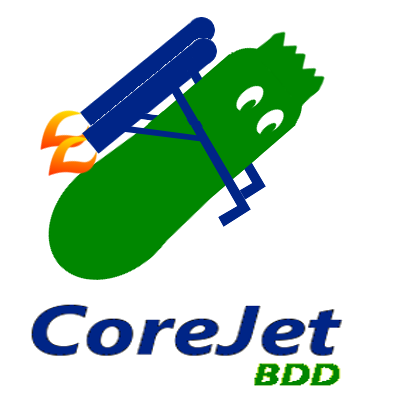

Gain confidence and insight.
With minimal fuss.
The Open Source, Business Friendly, Behaviour Driven Development Framework

It's a new open source testing tool for BDD
Well, BDD stands for Behaviour Driven Develpoment and this is where it all began, with a man called Dan.
Behaviour-Driven Development evolved from Test Driven Development.
By realising that everything a system does is a behaviour, and that all behaviour should have a business value, it focuses development and aims to reduce the divide between Business and Technology.
The three core principles are:
To find out more you can go to behaviour-driven.org
Actually, CoreJet isn't a vegetable, you're thinking of courgette. CoreJet is a tool that integrates seamlessly with the popular project tracking tool JIRA in order to put the principles of behaviour driven development into action.
This is how it's done:
This is the recipe for a delicious CoreJet project.
You can help us.
CoreJet is open source and you can contribute to it on github.
Anything that you can add will be much apopreciated. You can also send us your ideas, any bugs/features you've noticed, suggestions, worries, love to info@corejet.org. We look forward to hearing from you!